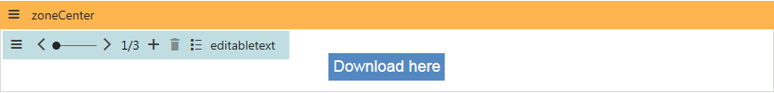
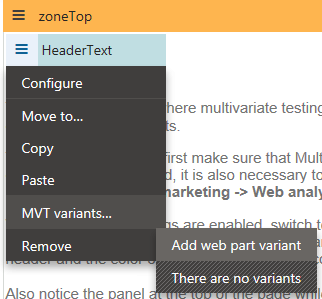
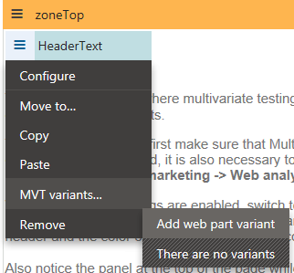
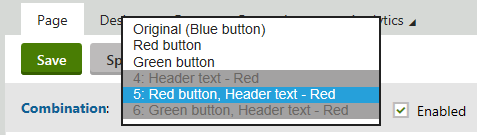

Using MVT testing - example
The example on this page demonstrates the functionality of the sample multivariate test included on the Corporate Site and shows how you can expand the test by adding another variant.
Adding a testing variant
Open the Pages application and select the MVT test page in the page tree, under Examples -> On‑line marketing -> Optimization.
This page already has a pre‑defined MVT test.
The page is composed of a header, content text and a link at the bottom.
Switch to the Design tab.
Users with the Design website permission for the Design module can manage web parts on a page's Design tab.
You can see that there are three versions of the Editable text web part that displays the link (the original and two MVT variants).
Each link variant uses a different background color.
The goal of the test is to find out which variant gets more link clicks from visitors.

Different web part variantsUsing the slider for switching between variants
Try switching between the content of individual variants using the slider in the web part's header. Also, notice the combination panel at the top of the page. It shows which combination of variants is currently being viewed and may also be used to switch between individual combinations or configure their behavior. Since the default test page only contains variants of a single web part, each "combination" represents the same page with a different link color.
Open the HeaderText web part's menu (
 ), hover over the MVT variants option in the context menu and select Add web part variant.
), hover over the MVT variants option in the context menu and select Add web part variant.
Enter the following values for the variant's properties:
Display name: Header text - Red
Enabled: Yes (leave it selected)
Click Save & Close.
A configuration dialog appears for the Editable text web part used to display the page's header.
Type Red link header variant into the Web part title property.
Setting an appropriate title allows you to identify which variant you are working with on the Design tab straight from the description in the web part header.
Click Save & Close.
There are now two different variants of the page's header text, which doubles the number of possible content combinations.
Switch to the Page tab and select one of the new combinations that contains the Header text - Red variant.
Type the following text into the empty editable region at the top of the page: MVT Test - Red Download Link.
Click Save.
Select the fourth combination using the panel and unselect the Enabled check box next to the drop‑down list. Repeat this also for the sixth combination.
This ensures that versions of the page where the new "red" header is combined with a blue or green link will not be included in the MVT test, which leaves only four active combinations: all of the variants with the original header and a new combination that contains the red link together with the second header.

Disabling variant combinations
Kentico EMS required
Features described on this page require the Kentico EMS license.
Enabling the sample multivariate test
The testing combinations are now prepared and you can start the MVT test.
In the Pages application, switch to the Analytics -> MVT tests tab of the page.
Edit (
 ) the Sample MVT Test.
) the Sample MVT Test.Check the Enabled box on the General tab.
Click Save.
Live testing
View the tested page on the live site:
Sign out of Kentico.
On the live site, navigate to On‑line marketing -> Optimization -> MVT test.
When you view the page, the system randomly selects and displays one of the possible combinations.
Click the Download here link.
The system logs a conversion for the given combination on the sample Conversion page.
If you return to the MVT test page, the same combination that was assigned during the first visit is always displayed.
Open the testing page in a different browser.
Again, the page automatically chooses and displays one of the combinations. Please note that it may be the same combination as before, since the selection process is entirely random. You can simulate visits from multiple users by clearing the cookies from your browser between views of the tested page. Try to use this approach to log several conversions for each combination.
See Analyzing MVT test results to learn how to view the results measured for the sample test.